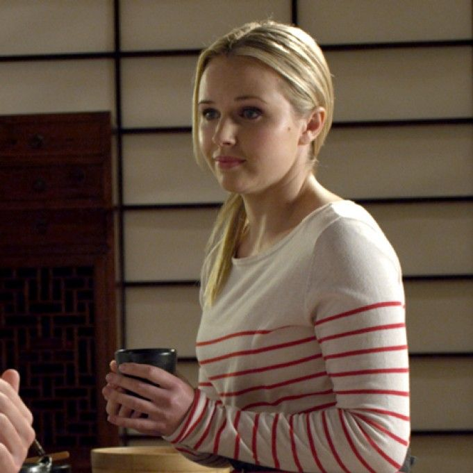
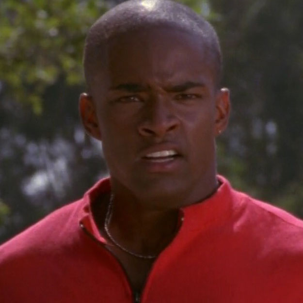
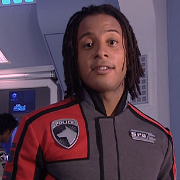

The Power of the Red Ranger
Better Than The Rest
- Lauren Shiba, the older sister of the protagonist Jayden Shiba, takes over after her brother becomes weak and unable to lead the team
- The first female Red Ranger in the entire franchise
- Although the series claims to always be growing, the appearance of a female Red Ranger didn’t happen until her first appearance in November 2012
It wasn’t permanent either; appears in the second season only, but proves to be a fan favorite over her brother.
Lauren Shiba
Maybe Pink Isn't So Delicate After All
- Time Force’s leader, was the first non-red leader
- Led by love and desire to destroy the series’ main antagonist
- Traditionally, the Pink Ranger is the “voice of reason”, but Jen’s character is adamant and swayed by a love for the then-Red Ranger’s late descendant
Jen Scotts
Took Them Long Enough
- The first black Red Ranger
Took the series about 4 years to give a black character the responsibilites of team leader. Since then, there has been four black Red Rangers
T.J. Johnson
The Stereotyping of Jack Landors
- Becomes the Red Ranger of this season by chance
- Written as a street thug who steals medical supplies to support the poor and homeless communities of his neighborhood
- Jack is “hot-headed” and would often clash with the former in-command Sky
- The representation of black men in general is very much prevalent in a series that claims to be all-inclusive
The series made an effort in writing an interesting character, but instead played right into the hands of society's detrimental narrative of black men
Jack Landors